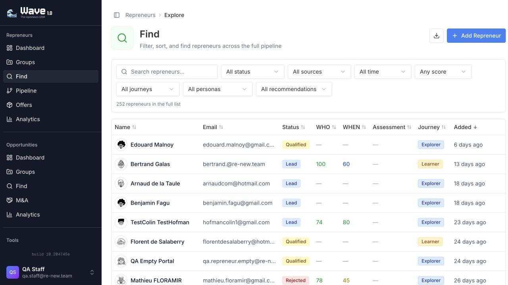
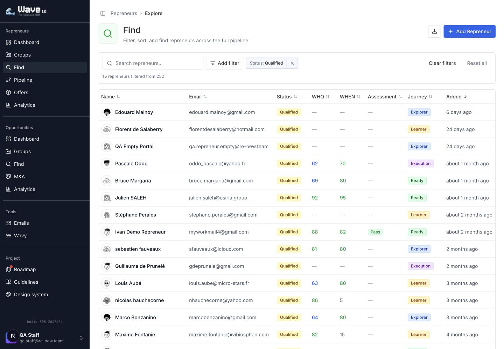

Show only what the task needs
Large directories no longer expose every possible filter by default. Search remains immediate; additional criteria are added only when useful.
We tightened the operating interface so daily work feels calmer, more deliberate, and easier to extend. This is not a visual reskin: it gives Wave shared rules for filters, charts, and reusable product components.
Wave has grown feature by feature. That was right for getting operational, but it left similar pages with slightly different controls and visual choices. The new foundation preserves the speed of our existing shadcn setup while giving the product a clear Re-New layer above it: trusted guidance, visible flow, and mature operational density.
Large directories no longer expose every possible filter by default. Search remains immediate; additional criteria are added only when useful.
Common headings, KPI tiles, filters, and charts now follow shared rules rather than being redesigned screen by screen.
Future work draws from a written contract and reusable components, which makes changes faster while reducing accidental variation.
The first rollout is on Repreneur Find, Opportunity Find and Groups, and the M&A directory. It follows the useful behaviour of Primer: progressive filters that can be added, edited, or removed without turning the page into a control panel.


The next signal is simple: whether the new filters shorten the time needed to reach useful working lists in weekly operations. The foundation is intentionally flexible, so we can improve the patterns from real use without reopening the overall visual system.